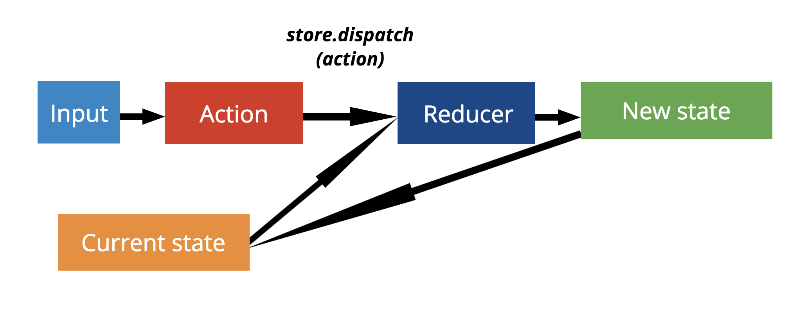
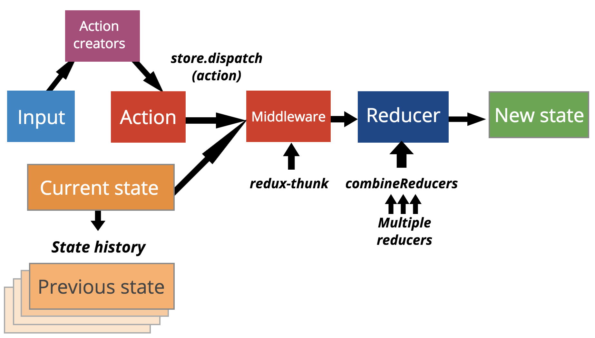

Introduction to Redux
Found at github.
David Rodriguez Fuentes/ linkedin Marcela Rodriguez / @arilaen
Heads Up
Girl Develop It is here to provide affordable and accessible programs to learn software through mentorship and hands-on instruction.
Some "rules"
- We are here for you!
- Every question is important
- Help each other
- Have fun
Introductions
Tell us about yourself.
Which of your web projects are you most proud of?
- Who are you?
- What do you hope to get out of the class?
- If you could make any website, what would it be?
Prerequisites
- Javascript
- ES6 (will cover the basics here)
- HTML/CSS
- Recommended: Experience with React or another frontend framework
You should have:
- A Codepen account
- A text editor (Atom, Sublime Text)
- Git (usually already installed)
- npm (nvm recommended)
- Google Chrome with Redux DevTools
Table of contents
What is Redux?
- "Single immutable state tree" - Dan Abramov
- Single: One source of truth
- Immutable: State is never mutated
- State tree: Can handle different parts of state in specific ways
- Predictable way to handle data changes
- Flux implementation
Why Redux?
- Managing state in complex apps is difficult
- When a user changes data, unanticipated scenarios can easily lead to errors
- Flux was originally created for React to address this problem at Facebook, but does not require a single, immutable state
Redux architecture
Three principles of Redux
- Single source of truth
- Read-only state
- Pure functions
These are summed up by describing Redux as a "single immutable state tree".
What is a pure function?
- Does not mutate any of its arguments
- -- A pure function that changes state would only return a new state, without changing the old one.
- Does not have any side effects
- -- Side effects are changes outside of the function, including database updates and HTTP requests.
Redux makes state changes...
- Predictable: you need to define every way your state can change
- Less bug prone
- Self documenting: you'll have a list of all possible state changes
- Reversible for debugging: Instead of changing your state, you'll have a history of states, and can time travel!

Redux in a nutshell
- Scales well
- Predictable
- Great debugging tools (like time travel!)
- Framework agnostic
- Overkill for very small or static sites
Before diving into Redux...
Let's review some important new features in Javascript!
New ECMAScript features Review
- Arrow functions
- Spread Operator
- Object.assign
- Object Rest/Spread Properties for ECMAScript (Stage 3)
Arrow function
this.name = 'Window Name';
const sayName = function() {
return this.name;
}
const sayNameArrow = () => this.name;
const instructor = {
name: 'Marcela',
sayName: sayName,
sayNameArrow: sayNameArrow,
};
instructor.sayName(); // 'Marcela'
instructor.sayNameArrow(); // 'Window Name'
Object.assign
const firstObject = {};
const secondObject = { a: 'a' };
const thirdObject = { b: 'b', c: 'c' };
const returnedObject = Object.assign(firstObject, secondObject, thirdObject);
returnedObject === firstObject; // true
returnedObject.a === 'a'; // true
returnedObject.b === 'b'; // true
returnedObject.c === 'c'; // true
Spread operator
const numbers = [1, 2];
const addNumber = (x, y) => x + y;
add(...numbers); // 3
const newNumbers = [...numbers, 3]; // [1, 2, 3];
Rest/spread Properties for
ECMAScript (stage 3)
const secondObject = { a: 'a' };
const thirdObject = { b: 'b', c: 'c' };
const returnedObject = { ...secondObject, ...thirdObject, d: 'd' };
returnedObject.a === 'a'; // true
returnedObject.b === 'b'; // true
returnedObject.c === 'c'; // true
returnedObject.d === 'd'; // true
Redux entities
- Actions - describe a desired state change
- Reducers - determine next state from the current state and received action
- Store - stores current app state
Actions
- Describe how state should change and include any data that may be necessary
- Must contain a
type - May optionally contain a
payload
Action Examples
const addOneAction = {
type: 'ADD_ONE',
};
const addNumberAction = {
type: 'ADD_NUMBER',
payload: 2,
};
Action Creators
Makes generating actions consistent and eases creation of actions with dynamic payloads
const addOne = () => ({
type: 'ADD_ONE',
});
const addNumber = payload => ({
type: 'ADD_NUMBER',
payload,
});
Reducers
- Determine next state from the current state and received action
- Must be a pure function - given the same current state and received action, the same next state must be returned
- Set an initial state
Reducer Example
const count = (state = 0, action) => {
switch(action.type) {
case 'ADD_ONE':
return state + 1;
case 'ADD_NUMBER':
return state + action.payload;
default:
return state;
}
};
Reducer Usage
const addOne = () => ({
type: 'ADD_ONE',
});
const addNumber = payload => ({
type: 'ADD_NUMBER',
payload,
});
const count = (state = 0, action) => {
switch(action.type) {
case 'ADD_ONE':
return state + 1;
case 'ADD_NUMBER':
return state + action.payload;
default:
return state;
}
};
const initialAction = {
type: '@@redux/INIT',
};
let state = count(undefined, initialAction);
console.log(state); // state #1?
state = count(state, addOne());
console.log(state); // state #2?
state = count(state, addNumber(3));
console.log(state); // state #3?
Store
- Single source of truth
- State is read only via
getStatemethod - Changes to state are made with pure functions (reducers) via
dispatchmethod
Store
// simplified version of redux createStore function
const createStore = reducer => {
let state;
const store = {
getState() {
return state;
},
dispatch(action) {
state = reducer(state, action);
},
};
store.dispatch({ type: '@@redux/INIT' });
return store;
};
export default createStore;
Store Usage
import { createStore } from 'redux';
import count from './count';
import { addOne, addNumber } from './actionCreators';
const store = createStore(count);
console.log(store.getState()); // state #1?
store.dispatch(addOne());
console.log(store.getState()); // state #2?
store.dispatch(addNumber(3));
console.log(store.getState()); // state #3?
Redux practice
https://github.com/davidrf/gdi-intro-to-redux-count-reducerAdding More Application Data to the Store
What will your state look like if you want to store a user's information which includes their first name and last name in addition to the count?
Sample Store Data With Count And User Data
{
count: 0,
user: {
firstName: '',
lastName: ''
}
}
Example: person reducer
const initialState = {
firstName: '',
lastName: '',
};
const person = (state = initialState, action) => {
switch(action.type) {
case 'SET_FIRST_NAME':
return { ...state, firstName: action.payload };
case 'SET_LAST_NAME':
return { ...state, lastName: action.payload };
default:
return state;
}
};
Combining Reducers
- You want a reducer to be in charge of a slice of the data
- However, Redux's
createStorefunction only takes one reducer
import count from './count';
import person from './person';
const rootReducer = (state = {}, action) => {
return {
count: count(state.count, action),
person: person(state.person, action),
};
};
export default rootReducer;
Using Redux's combineReducers
import count from './count';
import person from './person';
import { combineReducers } from 'redux';
/*
const rootReducer = (state = {}, action) => {
return {
count: count(state.count, action),
person: person(state.person, action),
};
};
*/
const rootReducer = combineReducers({
count: count,
person: person,
});
export default rootReducer;
Immutable Data Management
- Redux employs shallow equality checking in
combineReducersfor optimization purposes - Immutable data management ultimately makes data handling safer
- Immutability allows undo and time-travel debugging functionality to be easily implemented
Updating Lists
// example action
// { type: 'ADD_FAVORITE_BOOK', payload: 'Harry Potter' }
const favoriteBooks = (state = [], action) => {
switch(action.type) {
// INCORRECT WAY
// case 'ADD_FAVORITE_BOOK':
// return state.push(action.payload);
// CORRECT WAY
case 'ADD_FAVORITE_BOOK':
return [...state, action.payload];
default:
return state;
}
};
Updating Objects
// example action
// { type: 'SET_FIRST_NAME', payload: 'Marcela' }
const person = (state = { firstName: '' }, action) => {
switch(action.type) {
// INCORRECT WAY
// case 'SET_FIRST_NAME':
// state.firstName = action.payload;
// return state;
// CORRECT
case 'SET_FIRST_NAME':
return { ...state, firstName: action.payload };
default:
return state;
}
};
Additional Immutability Resources
Let's practice using Redux on Codepen!
Local environment setup
- Install create-react-app tool:
npm i -g create-react-app - Create a new app:
create-react-app gdi-redux;cd gdi-redux - Install Redux and react-redux (which we'll cover soon!):
npm install redux react-redux --save - Try using Redux in src/index.js
Day 1 Review
- What is Redux?
- ES6
- Actions, Reducers, State
- Finishing local setup
What is Redux?
- "Single immutable state tree"
- Predictable
- Framework agnostic
- Allows features like time travel
- Redux flow
ES6 Features
- Arrow functions
- Object.assign
- Rest/spread functions
Codepen practice: https://codepen.io/arilaen/pen/qVNdvJ?editors=0010
What entities do we use in Redux?
- Actions
- Reducers
- State
Codepen: https://codepen.io/arilaen/pen/zPqvNe
Local environment setup
- Install create-react-app tool:
npm i -g create-react-app - Create a new app:
create-react-app gdi-redux;cd gdi-redux - Install Redux and react-redux (which we'll cover soon!):
npm install redux react-redux --save - Try using Redux in src/index.js
React Review
- Functional components
- Container components
When to use each type of component?
- Functional components are UI-only, and do not need to access state
- -> Therefore they can be expressed as single render functions.
- Container components handle state, and use the class-based pattern, which includes the render function and any other required life cycle methods
Functional Component Example
import React from 'react';
import { render } from 'react-dom';
const Hello = ({ name }) => <h1>Hello {name}!</h1>;
const App = () => (
<div>
<Hello name="CodeSandbox" />
<h2>Start editing to see some magic happen {'\u2728'}</h2>
</div>
);
render(<App />, document.getElementById('root'));
Container Component Example
import React, { Component } from "react";
import { render } from "react-dom";
class AppContainer extends Component {
state = {
list: [],
nameInput: ""
};
onChangeInput = event => this.setState({ nameInput: event.target.value });
onClickButton = () => {
const { list, nameInput } = this.state;
const nextList = [...list, nameInput];
this.setState({ list: nextList });
};
render() {
const { name } = this.props;
const { list, nameInput } = this.state;
return (
<App
list={list}
name={name}
nameInput={nameInput}
onChangeInput={this.onChangeInput}
onClickButton={this.onClickButton}
/>
)
}
}
export const App = ({
list,
name,
nameInput,
onChangeInput,
onClickButton,
}) => (
<div>
<h1>{name}</h1>
<input onChange={onChangeInput} value={nameInput} />
<button onClick={onClickButton}>Add Item</button>
<ul>{list.map(name => <li key={name}>{name}</li>)}</ul>
</div>
);
render(<AppContainer name="Grocery List" />, document.getElementById("root"));
Connecting React and Redux
- Context
- React-redux library
- Connect
- MapStateToProps
- MapDispatchToProps
- Provider
Context
- Context is an object available to all of your React components
- Allows you to use state in child components
- Goes a bit against the React philosophy of passing data from parent components to child components through props
- However it makes it easier to separate container and view components, especially when using Redux!
React-redux
- Contains helper methods to integrate React and Redux seamlessly
- Uses store.subscribe() and context behind the scenes to make Redux state available to any React component
npm i react-redux --saveConnect
- A react-redux method that curries React components with Redux logic
- A higher-order function that takes one or two mappers to convert Redux store elements into React props
- Returns a function that takes a React component as an argument, and adds the mapped props to it
connect(mapStateToProps, mapDispatchToProps)(Filter);
connect(mapStateToProps)(Header); // If mapDispatchToProps is not defined, the dispatch method is added to the Header's props!
MapStateToProps
state => props
- Takes your Redux state and returns an object with properties that will be attached to the React component's props argument
- Can also use the props on the component (ownProps) as a second argument
const mapStateToProps = (state) => ({
counter: state.counter,
user: state.user,
todos: state.todos.filter(todo => todo.type === state.visibleFilterType)
});
const mapStateToProps = (state, ownProps) => ({
active: state.visibleFilterType === ownProps.filterType
});
MapDispatchToProps
dispatch => props
- Maps your dispatch methods to props
- If not used, { dispatch } itself will be added to props
- Can also use existing props (ownProps)
const mapDispatchToProps = (dispatch) => ({
increment: () => dispatch(actions.increment()),
decrement: () => dispatch(actions.decrement())
});
Using connect
const mapStateToProps = (state) => ({
counter: state.counter
});
const mapDispatchToProps = (dispatch) => ({
increment: () => dispatch(actions.increment()),
decrement: () => dispatch(actions.decrement())
});
const Counter = ({ counter, increment, decrement }) => (
{counter}
);
connect(mapStateToProps, mapDispatchToProps)(Counter);
One more step...
- For connect to work, we need to make sure Redux state is attached to our React
context. - We do this by using a react-redux component called Provider, which will wrap our entire app, and thus allow any component to access Redux state and use connect.
- Then connect uses context.store behind the scenes to access state and dispatch for mapStateToProps and mapDispatchToProps.
const store = createStore(reducer)
render(
<Provider store={store}>
<App />
</Provider>,
document.getElementById('root')
)
Time to practice using connect!
We'll convert this counter example to use react-redux: https://codesandbox.io/s/q3zoo9l9w9M
You can also run and update the counter example locally
Finished example: https://codesandbox.io/s/64qv366r63
Also check out the Redux docs for more examples!
What is connect?
Answer: It is a higher-order component (HOC)
A higher-order component is a function that takes a component and returns a new component
Higher-order function
A higher-order function is a function that does one or both of the following
- Receives a function as an argument
- Returns a function
const addOne = x => x + 1;
const addTwo = x => x + 2;
// Can create these functions with a higher-order function addX
const addY = y => x => x + y;
// same functionality as before
const addOne = addY(1);
const addTwo = addY(2);
Higher-order component example
A higher-order component is a kind of higher-order function because returns a component which is a function.
const ViewProps = props => {JSON.stringify(props, null, 2)};
const withNextCount = count => WrapperComponent => props => {
const additionalProps = {
nextCount: count + 1,
};
return <WrapperComponent {...additionalProps} {...props} />;
};
const ViewPropsEnhanced = withNextCount(1)(ViewProps);
render(
<ViewPropsEnhanced firstName="David" />,
document.getElementById('root')
);
Resources To Learn More About HOCs
Practice time!
Let's practice implementing connect on our own Redux app!
Clone and complete a todo app: https://github.com/arilaen/redux-practice-todos
Day 2 Review
ProviderconnectandmapStateToPropsmapDispatchToProps
Provider
What prop do you need to give to the Provider component?
Answer: The Redux store
What is the purpose of the Provider?
Answer: Provides store to all child components via context
Provider example usage
import React from 'react';
import { render } from 'react-dom';
import { Provider } from 'react-redux';
import { createStore } from 'redux';
import rootReducer from './rootReducer';
import App from './App';
const store = createStore(rootReducer);
render(
<Provider store={store}>
<App />
</Provider>,
document.getElementById('root')
);
connect
What is the purpose of connect?
Answer: connects component to Redux store via a HOC
What does connect receive as the first argument?
Answer: A mapStateToProps function
What does a mapStateToProps function do?
Answer: It has access to the store's state, so it create props from store state. These props will be passed down the component given to theconnect HOC.
connect and mapStateToProps example usage
import React from 'react';
import { connect } from 'react-redux';
const Counter = ({ count }) => (
<h1>Count is: {count}<h1>
);
const mapStateToProps = state => ({
count: state.count,
});
export default connect(mapStateToProps)(Counter);
Assuming state looks like
{
count: 5
}
mapDispatchToProps
Where is mapDispatchToProps used?
Answer: It is given as the second argument to connect
What does a mapDispatchToProps function do?
Answer: It has access to the store's dispatch, so it create props from dispatch and actions. These props will be passed down the component given to theconnect HOC.
What does a mapDispatchToProps object do?
Answer: creates functions that dispatch the actions given in the object. These functions will be passed down as props to the component given to theconnect HOC.
mapDispatchToProps example usage # 1
import React from 'react';
import { connect } from 'react-redux';
import { addOne, subtractOne } from './actions';
const Counter = ({ count, onClickAddOne, onClickSubtractOne }) => (
<h1>Count is: {count}<h1>
<button onClick={onClickAddOne}>Add<button/>
<button onClick={onClickSubtractOne}>Subtract<button/>
);
const mapStateToProps = state => ({ count: state.count });
const mapDispatchToProps = dispatch => ({
onClickAddOne: () => dispatch(addOne()),
onClickSubtractOne: () => dispatch(subtractOne()),
});
export default connect(mapStateToProps, mapDispatchToProps)(Counter);
mapDispatchToProps example usage # 2
import React from 'react';
import { connect } from 'react-redux';
import { addOne, subtractOne } from './actions';
const Counter = ({ count, onClickAddOne, onClickSubtractOne }) => (
<h1>Count is: {count}<h1>
<button onClick={onClickAddOne}>Add<button/>
<button onClick={onClickSubtractOne}>Subtract<button/>
);
const mapStateToProps = state => ({ count: state.count });
const mapDispatchToProps = ({
onClickAddOne: addOne,
onClickSubtractOne: subtractOne,
});
export default connect(mapStateToProps, mapDispatchToProps)(Counter);
What is a container component?
Handles state logic
Usually a class component
Presentational components handle UI logic
Those are usually functional components
However! It is possible to create a component that handles Redux state from a presentational or functional component with...
connectconnect
and containers
connectWrapping components in
connectIf the original components do not have a lot of their own state logic, they can still be presentational components. Usually, only the connected component will be exported.
Example: TodoFilter that filters visible todos based on their completed state, and
export default VisibleTodoFilter = connect(mapStateToProps)(TodoFilter)Other presentational components can be reused, so should be created separately, and used in other components created with
connectExample: A
LinkHeaderLinkFooterLinkAre components created with connect containers? Technically yes. I don't always put them in the containers folder if the components they're created from are small and don't have child components. There's no hard and fast rule!
Further reading: Presentational and Container Components by Dan Abramov
Practice converting an app to using Redux
https://github.com/davidrf/intro-to-redux-day-2-review
$ git clone https://github.com/davidrf/intro-to-redux-day-2-review.git
$ cd intro-to-redux-day-2-review
$ yarn install
$ yarn start
Practice creating a grocery list app from scratch
https://github.com/arilaen/intro-to-redux-day-2-grocery-list
$ git clone https://github.com/arilaen/intro-to-redux-day-2-grocery-list
$ cd intro-to-redux-day-2-grocery-list
$ yarn install
$ yarn start
Handling HTTP Requests
Where do we make HTTP requests and how do we get the data in our store?
Example API Data
What would your reducer look like in order to handle this incoming data?
{
"events": [
{
"id": 1,
"name": "Introduction To React",
]
},
{
"id": 2,
"name": "Introduction To Redux",
},
]
}
Example events reducer
import { combineReducers } from 'redux';
const initialState = {
all: [],
isLoading: false
};
// action.payload is the whole API response
const all = (state = initialState.all, action) => {
switch (action.type) {
case 'FETCH_EVENTS_REQUEST_SUCCESS':
return action.payload.events;
default:
return state
}
});
const isLoading = (state = initialState.isLoading, action) => {
switch (action.type) {
case 'FETCH_EVENTS_REQUEST':
return true;
case 'FETCH_EVENTS_REQUEST_SUCCESS':
case 'FETCH_EVENTS_REQUEST_FAILURE':
return false;
default:
return state
}
});
const users = combineReducers({
all,
isLoading,
});
export default events;
Action Creators
const fetchEventsRequest = () => ({
type: 'FETCH_EVENTS_REQUEST',
});
const fetchEventsRequestFailure = () => ({
type: 'FETCH_EVENTS_REQUEST_FAILURE',
});
// payload is the whole API response
const fetchEventsRequestSuccess = payload => ({
type: 'FETCH_EVENTS_REQUEST_SUCCESS',
payload,
});
Do API request in componentDidMount
import React, { Component } from 'react';
import { connect } from 'react-redux';
import Events from '../components/Events';
import {
fetchEventsRequest,
fetchEventsRequestFailure,
fetchEventsRequestSuccess,
} from '../reducers/events';
class EventsContainer extends Component {
componentDidMount() {
this.props.fetchEventsRequest();
fetch('http://localhost:3000/api/events')
.then(response => {
if (response.ok) {
return response.json();
}
throw new Error('request failed');
})
.then(
payload => this.props.fetchEventsRequestSuccess(payload),
() => this.props.fetchEventsRequestFailure(),
);
}
render() {
return <Events events={this.props.events} />;
}
}
const mapStateToProps = state => ({
events: state.events.all,
});
export default connect(mapStateToProps, {
fetchEventsRequest,
fetchEventsRequestFailure,
fetchEventsRequestSuccess,
})(EventsContainer);
Handling Side-Effects
Redux reducers and actions are pure. How do we handle anything that produces side-effects??
Redux Middleware Handles Side-Effects
- Code that runs after calling
dispatchwith an action, but before the dispatched action reaches the reducers. - Receives every dispatched action,
store,next. - Can log actions, cancel actions, dispatch new actions, and much more.
- It may run code that produces side effects!
Redux Architecture With Middleware

Example middleware: Redux thunk
To install:yarn add redux-thunk
const thunk = store => next => action => {
if (typeof action === 'function') {
return action(store.dispatch, store.getState);
}
return next(action);
};
Adding Middleware To Store
import { createStore, applyMiddleware } from 'redux';
import thunk from 'redux-thunk';
import rootReducer from '../reducers';
const configureStore = preloadedState => {
const enhancer = applyMiddleware(thunk);
return createStore(rootReducer, preloadedState, enhancer);
};
export default configureStore;
How To Refactor HTTP Request Strategy?
Create a single function that does the request and dispatches actions, and dispatch that function.
// From EventsContainer file
componentDidMount() {
this.props.fetchEventsRequest();
fetch('http://localhost:3000/api/events')
.then(response => {
if (response.ok) {
return response.json();
}
throw new Error('request failed');
})
.then(
payload => this.props.fetchEventsRequestSuccess(payload),
() => this.props.fetchEventsRequestFailure(),
);
}
Creating A Thunk
const fetchEventsRequest = () => ({
type: 'FETCH_EVENTS_REQUEST',
});
const fetchEventsRequestFailure = () => ({
type: 'FETCH_EVENTS_REQUEST_FAILURE',
});
// payload is the whole API response
const fetchEventsRequestSuccess = payload => ({
type: 'FETCH_EVENTS_REQUEST_SUCCESS',
payload,
});
export const fetchEvents = () => (dispatch, getState) => {
dispatch(fetchEventsRequest());
fetch('http://localhost:3000/api/events')
.then(response => {
if (response.ok) {
return response.json();
}
throw new Error('request failed');
})
.then(
payload => dispatch(fetchEventsRequestSuccess(payload)),
() => dispatch(fetchEventsRequestFailure()),
);
}
Example API Data
What would your reducer look like in order to handle this incoming data?
{
"events": [
{
"id": 1,
"name": "Introduction To React",
]
},
{
"id": 2,
"name": "Introduction To Redux",
},
]
}
Example events reducer (unchanged)
import { combineReducers } from 'redux';
const initialState = {
all: [],
isLoading: false
};
// action.payload is the whole API response
const all = (state = initialState.all, action) => {
switch (action.type) {
case 'FETCH_EVENTS_REQUEST_SUCCESS':
return action.payload.events;
default:
return state
}
});
const isLoading = (state = initialState.isLoading, action) => {
switch (action.type) {
case 'FETCH_EVENTS_REQUEST':
return true;
case 'FETCH_EVENTS_REQUEST_SUCCESS':
case 'FETCH_EVENTS_REQUEST_FAILURE':
return false;
default:
return state
}
});
const users = combineReducers({
all,
isLoading,
});
export default events;
Do API request in componentDidMount With Thunk
import React, { Component } from 'react';
import { connect } from 'react-redux';
import Events from '../components/Events';
import { fetchEvents } from '../reducers/events';
class EventsContainer extends Component {
componentDidMount() {
fetchEvents();
}
render() {
return <Events events={this.props.events} />;
}
}
const mapStateToProps = state => ({
events: state.events.all,
});
export default connect(mapStateToProps, {
fetchEvents,
})(EventsContainer);
Normalizing Data
How would you handle adding the following API response data to your redux store?
{
"events": [
{
"id": 1,
"name": "Introduction To React",
"students": [
{ "id": 1, "name": "Eager Student 1" },
{ "id": 2, "name": "Eager Student 2" }
]
},
{
"id": 2,
"name": "Introduction To Redux",
"students": [
{ "id": 1, "name": "Eager Student 1" },
{ "id": 3, "name": "Eager Student 3" }
]
},
]
}
Problems With Nested Data
- Harder to update if there is duplicate data
- Reducer logic becomes more complex
- Can trigger unnecessary renders
Normalizing data with normalizr
{
"classes": [
{
"id": 1,
"name": "Introduction To React",
"students": [
{ "id": 1, "name": "Eager Student 1" },
{ "id": 2, "name": "Eager Student 2" }
]
},
{
"id": 2,
"name": "Introduction To Redux",
"students": [
{ "id": 1, "name": "Eager Student 1" },
{ "id": 3, "name": "Eager Student 3" }
]
},
]
}
{
"entities": {
"users": {
1: {
"id": 1,
"name": "Eager Student 1"
},
2: {
"id": 2,
"name": "Eager Student 2"
},
3: {
"id": 3,
"name": "Eager Student 3"
}
},
"events": {
1: {
"id": 1,
"name": "Introduction To React",
"users": [
1,
2
]
},
2: {
"id": 2,
"name": "Introduction To Redux",
"users": [
1,
3
]
}
}
},
"result": {
"events": [
1,
2
]
}
}
Using normalizr
{
"events": [
{
"id": 1,
"name": "Introduction To React",
"users": [
{ "id": 1, "name": "Eager Student 1" },
{ "id": 2, "name": "Eager Student 2" }
]
}
]
}
import { normalize, schema } from 'normalizr';
const user = new schema.Entity('users');
const event = new schema.Entity('events', { users: [user]});
export const normalizeEvents = data => normalize(data, { events: [event] })
Updating fetchEvents thunk
import { normalizeEvents } from './normalizers';
export const fetchEvents = () => (dispatch, getState) => {
dispatch(fetchEventsRequest());
fetch('http://localhost:3000/api/events')
.then(response => {
if (response.ok) {
return response.json();
}
throw new Error('request failed');
})
.then(responseBody => normalizeEvents(responseBody))
.then(
payload => dispatch(fetchEventsRequestSuccess(payload)),
() => dispatch(fetchEventsRequestFailure()),
);
}
Incorporating Normalized Data - users reducer
import { combineReducers } from 'redux';
const initialState = {
byId: {},
};
const byId = (state = initialState.byId, action) => {
switch (action.type) {
case 'FETCH_EVENTS_REQUEST_SUCCESS':
// action.payload is the normalized data
return { ...state, action.payload.entities.users };
default:
return state
}
});
const users = combineReducers({
byId,
});
export default users;
Incorporating Normalized Data - events reducer
import { combineReducers } from 'redux';
const initialState = {
byId: {},
indexIds: [],
};
const byId = (state = initialState.byId, action) => {
switch (action.type) {
case 'FETCH_EVENTS_REQUEST_SUCCESS':
// action.payload is the normalized data
return { ...state, action.payload.entities.events };
default:
return state
}
});
const indexIds = (state = initialState.indexIds, action) => {
switch (action.type) {
case 'FETCH_EVENTS_REQUEST_SUCCESS':
// action.payload is the normalized data
return [...state, action.payload.result.events];
default:
return state
}
});
const users = combineReducers({
byId,
indexIds,
});
export default events;
Creating the root reducer from
eventsreducer and usersreducer
import { combineReducers } from 'redux';
import events from './events';
import users from './users';
export default combineReducers({
events,
users,
});
Querying Normalized Data
- How do we get a specific resource?
- How do we get a list of resources?
Getting a specific event
const mapStateToProps = (state, props) => ({
event: state.events.byId[props.eventId],
});
Can clean up mapStateToProps by creating a selector function
const event = (state, props) => {
const { byId } = state.events;
const { eventId } = props;
return byId[eventId];
};
const mapStateToProps = (state, props) => ({
event: event(state, props),
});
Getting a list of events
const events = state => {
const { byId, indexIds } = state.events;
return indexIds.map(id => byId[id]);
};
const mapStateToProps = (state, props) => ({
events: events(state),
});